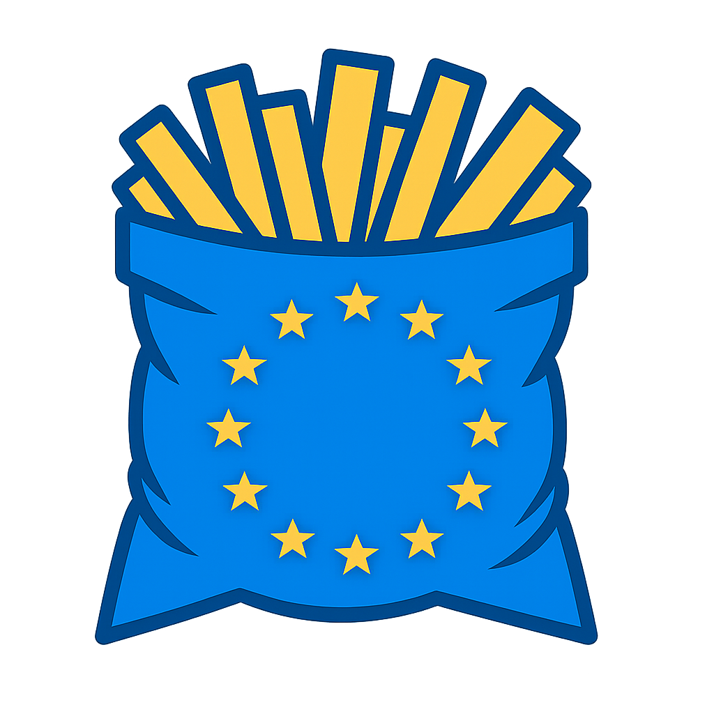
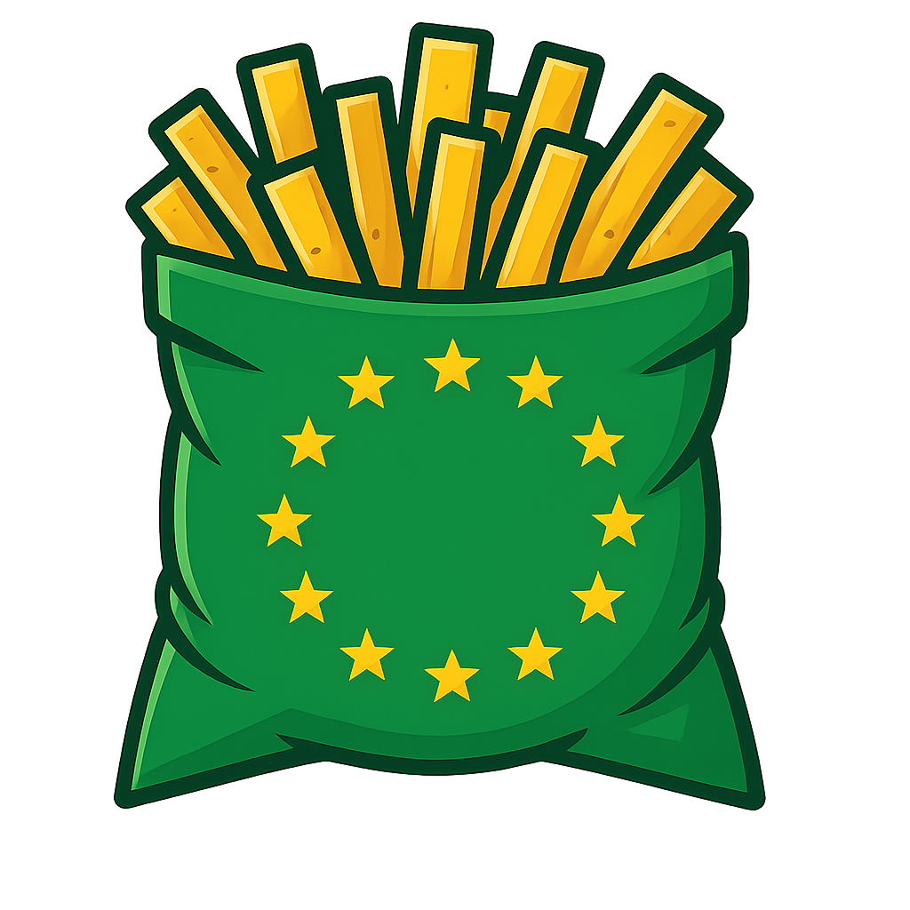
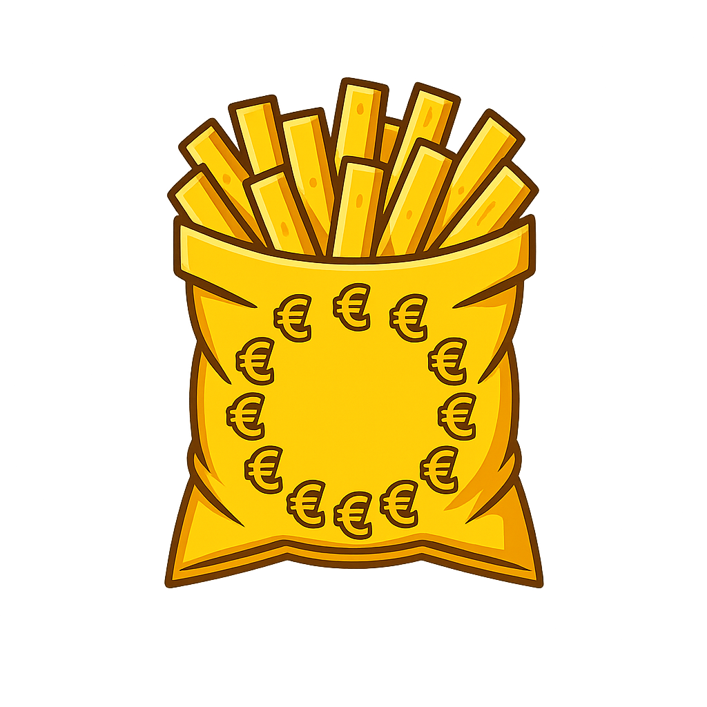

All the EU, with AI.
Brubru is an AI-powered assistant built specifically for public affairs professionals working on EU policy. We track every new regulation, every committee vote, every Commission agenda, so you don't have to.
Brussels moves fast. Too fast.
EU policy professionals spend up to half their week searching for information rather than acting on it. Here is what that looks like in practice.
The EU you face
The machine that works through it for you
The pain points we solve
- Hours lost in EUR-Lex and OEIL Finding the right CELEX, the right procedure reference, the right rapporteur takes 20 to 40 minutes per file. Brubru gives you the answer in seconds.
- Amendment drafting that burns a day Drafting a technically correct EP amendment in Akoma Ntoso XML is a specialist skill. Our Amendator produces valid amendments instantly.
- Missed committee votes and deadlines Committee agendas change, deadlines slip. My EU Calendar aggregates all institutional agendas in one place with real-time alerts.
- Compliance gaps nobody sees coming New obligations enter into force silently. EU Law Comply benchmarks your internal policies against applicable EU law and flags the gaps.
- Public procurement that feels like a black box TED publishes thousands of notices a week. The Tenderator filters, matches, and alerts you on the opportunities that actually fit your profile.
- Meetings you should have taken Who is the rapporteur? Which shadows should you brief? Brubru maps the political landscape of every file automatically.
Who uses Brubru
Brubru is built for the six profiles of EU public affairs: the consultant, the corporate in-house, the trade association policy lead, the EU official, the parliamentary assistant, and the NGO or civil society advocate.
Who: senior associates and directors in Brussels consultancies (Kreab, Rud Pedersen, Hume Brophy, Cambre, FGS, Interel, Fleishman, etc.) managing portfolios of five to fifteen client briefs at once.
The job: turn regulatory change into billable advice, fast. Client expects a memo the same afternoon the Commission publishes a proposal.
Pain: thirty minutes per file just to find the CELEX, the rapporteur, the EP committee, the Council working party. Multiply by fifteen clients.
Who: EU affairs managers inside multinationals, mid-caps, and scale-ups (pharma, tech, automotive, finance, retail). Often a team of one to three people covering the whole regulatory footprint of the company.
The job: protect the business from bad regulation and capture opportunities. Report quarterly to C-suite on regulatory exposure and advocacy wins.
Pain: too many files, too few hands. Risk of missing a delegated act, a trilogue, or a compliance deadline. No time to draft position papers from scratch.
Who: policy officers and directors at European trade associations (DIGITALEUROPE, EFPIA, CEFIC, ACEA, EBF, FoodDrinkEurope, SME United, etc.) representing sectors or SME constituencies before EU institutions.
The job: consolidate members' positions, draft association responses to consultations, brief members on upcoming legislation, coordinate advocacy with allies.
Pain: members want clear guidance on thirty dossiers, fast. Staff spend more time compiling monitoring reports than doing advocacy.
Who: Commission staff (desk officers, heads of unit, policy officers across DGs and cabinets), Council of the EU (General Secretariat, working party chairs, national attachés in Permanent Representations), European Parliament secretariat and committee staff, EU agencies (EFSA, EMA, ENISA, ACER, EEA, FRA, EUROPOL, etc.), European Economic and Social Committee, Committee of the Regions, ECB, EIB, and the Court of Auditors.
The job: draft and negotiate legislation across institutions, run consultations, follow the Parliament's amendments on your own files, track what sister DGs and Council configurations are proposing, coordinate with national attachés in the Council.
Pain: internal systems are slow and siloed by institution. Tracking stakeholder positions (Have Your Say feedback, lobby meetings, EP amendments, Council Working Party signals) across files is manual. Predicting political outcomes across the trilogue triangle is guesswork.
Who: accredited parliamentary assistants (APAs), local assistants, and advisers in the seven political groups (EPP, S&D, Renew, Greens, PfE, ECR, The Left) and the EP Secretariat.
The job: brief the MEP on every vote, draft amendments, manage constituency questions, track sister legislation in national parliaments, coordinate with shadows and rapporteurs in other groups.
Pain: ten committees, dozens of files, hundreds of amendments per plenary. Producing a vote list by Monday morning for a Tuesday mini-plenary is a recurring nightmare.
Who: policy and campaign staff at European NGOs and civil society networks (Transparency International EU, BEUC, EPHA, EDRi, BirdLife Europe, WWF European Policy Office, Climate Action Network, European Youth Forum, Eurochild, Caritas Europa, Amnesty International EU, Oxfam EU, Social Platform, etc.) plus the public-interest arms of foundations and think tanks.
The job: defend the public interest in EU legislation: draft amendments for friendly MEPs, respond to Commission consultations, brief coalitions of NGOs, produce campaign-ready positions in multiple languages, monitor the Council where public scrutiny is weakest.
Pain: small teams outnumbered by industry lobbyists. Limited budgets. Need to move as fast as commercial advocates without the same research resources. Consultation responses and amendment drafting eat into campaigning time.
Product suite
Six integrated modules covering the full EU advocacy workflow. Click any module to explore.






- Natural language queries about EU legislation, procedures, and institutional dynamics
- Strategic advocacy guidance: who to talk to, which arguments work, how to position
- Document uploads (PDF, DOCX) for contextual analysis and summarisation
- Every answer cites CELEX numbers, procedure references, and source URLs
- Multi-turn conversation memory with quality scoring
- OEIL procedures (21,600+), Legislative Train (490+ files), EPRS Think Tank, EP committee work (26 committees), EC Transparency Register
- Recital-to-article linker (TF-IDF per-law map)
- Statutory definition extractor (every Article 3/4 "term means...")
- Law alias resolver (GDPR, DSA, DMA, AI Act, CBAM, ...) -> CELEX
- Cross-reference resolver: inline "Article N of Regulation (EU) YYYY/NNN" -> EUR-Lex URL
- Mistral (primary)
- Claude Sonnet (fallback): complex reasoning
- GPT-4 Turbo (fallback): high availability
- Gemini 1.5 Pro (fallback): last resort
- News Feed: 33+ RSS feeds (EP, Commission, Council, EPRS, OEIL, media)
- Legislative Train: 490+ priority files with status
- My Files: tracked legislation and bookmarked collections
- My EU Calendar: aggregated EU institutional calendar with Google Calendar sync
- Predictions: AI outcome + timeline forecasts
- Position Analysis: rapporteur + shadow + Council MS positions
- Stakeholder feedback: live from Have Your Say
- Commissioner agendas: who is meeting whom
- Document generator: position papers, MEP briefings, talking points
- Load any EU legislative text via EUR-Lex CELEX or URL
- Two-column layout: original vs proposed changes
- Click any article, paragraph, recital, or annex to propose an amendment
- AI drafting: describe in natural language, get legal text
- Track changes: bold for additions, strikethrough for deletions
- Export in XML, HTML, PDF, or Word
- Browse real EP committee amendments by procedure, with political group breakdown
- Best Allies: top 15 MEPs ranked by alignment with your position
- Coverage Gaps: articles MEPs amend that you have not touched, and vice versa
- Political Landscape: supportive, mixed, opposed groups at a glance
- Recital-aware justifications, definition hover, clickable cross-references
- Upload your organisational policies (PDF, DOCX, TXT)
- Select EU law clusters (AI Act, GDPR, NIS2, CSRD, MiCA, DORA, ...)
- AI extracts regulatory requirements using HuggingFace models
- Two-phase gap analysis: semantic retrieval + LLM refinement
- Severity ratings: missing, partial, unclear, compliant
- Export report with Gantt-style action plan (PDF, Word, HTML, JSON)
- Traditional compliance assessments cost EUR 20,000-50,000 and take 2-4 weeks
- Brubru produces a first-pass analysis in minutes at a fraction of the cost
- Unprecedented wave of deadlines (AI Act, NIS2, DORA) 2025-2027
- Organisation Profile: CPV codes, geography, capacity, experience
- AI-Matched Feed: relevance-scored tenders updated daily from TED
- SME Suitability Scoring: multi-criteria weighted fit analysis
- Bid Checklist: requirements, eligibility, deadlines auto-extracted
- Tender Calendar: visual deadlines across all tracked tenders
- All EU Funding: Horizon Europe, Digital Europe, CEF, LIFE, Erasmus+, EIC, EIB/EIF, Structural Funds, RRF
- National Schemes: MS co-financing, national subsidies, regional funds
- AI Grant Matching: profile against all EU and national programmes
- The real moat is the vertical ingestion + intelligence layer: 519 sources, recital linker, law aliases, cross-reference resolver, definition extractor, predictions engine.
- Partners (RegTech, consultancies, media, public sector, national registers) need the data, not our UI.
- Brubru app is the first user of its own API.
-
GET /api/v1/legislation: full-text and CELEX search across 28,513 OJ entries (8,710 distinct laws). -
GET /api/v1/procedures: OEIL status, rapporteurs, committees, timeline. -
GET /api/v1/publications: EPRS, JRC, Eurostat, DG publications with filters. -
GET /api/v1/consultations/by-initiative/{id}/feedback: live HYS feedback. -
GET /api/v1/calendar: aggregated institutional calendar. -
POST /api/v1/legislation/annotate-text: cross-refs, definitions, aliases. -
GET /api/v1/predictions/{procedure}: timeline + outcome forecasts.
- Brubru's public Model Context Protocol server exposes the same data to Claude, ChatGPT, Mistral, and any MCP-capable assistant.
- Tools:
search_eu_legislation,search_knowledge_guides,get_procedure_status,search_eprs,get_calendar_events,ask_brubru. - Plug Brubru into your own AI workflows without rebuilding the ingestion stack.
- GovClipping (Spain, RegTech) -- first external paid customer at EUR 99/month.
- Brubru itself -- built on top of its own API.
- Pipeline: consultancies, in-house PA teams, national registers, EU-specialised media.
Live docs at brubru.beresol.eu/api. Free tier for evaluation and open-source projects.
Who uses what, and how
Concrete use cases for each profile, across all five products.
| Profile | Chat | Amendator | My EU Bubble | EU Law Comply | Tenderator |
|---|---|---|---|---|---|
| Consultant | Brief a client in ten minutes: ask Brubru for the file's procedure reference, rapporteur, trilogue status, and stakeholder positions. | Draft amendments for clients who need to influence a specific article or recital, ready to send to a friendly MEP's office. | Track all client files in one place, with predictions and alerts when status changes. | Offer compliance audits as a new service line for corporate clients. | Flag EU procurement opportunities for client subsidiaries and partner firms. |
| Corporate in-house | Generate the monthly regulatory briefing for C-suite in one command. | Draft the company's amendment proposals before sending them to the rapporteur or trade association. | Monitor the regulatory footprint of your business. Position Analysis shows how Council member states are leaning on your files. | Run a gap analysis on your internal AI, DORA, CSRD, or CBAM policy. | Spot EU grant and procurement opportunities (Horizon, Digital Europe, IPCEI calls). |
| Trade association | Answer member questions on call: "What does the Omnibus mean for SMEs?" with sourced detail in seconds. | Produce the association's amendment package for distribution to friendly MEPs. | Produce members' weekly monitoring digest automatically, with predictions and EP group voting signals. | Prepare association sector impact assessments on upcoming legislation. | Surface EU call-for-proposals that members can jointly bid on. |
| EU official | Check how stakeholders are positioning on your file: Have Your Say feedback, EP amendments, Council working party signals, national attaché positions. | Study amendment patterns on your proposal to anticipate trilogue bargaining zones. | Track sister files across DGs, Council configurations, EP committees, agencies and the ECB in one view. | Benchmark a sector policy draft against the existing acquis before inter-service consultation or Council working party discussion. | Track which firms are bidding for Commission, Council and agency framework contracts in your policy area. |
| EP assistant / group staff | Produce the weekly vote list in minutes, with plain-language summaries and group voting recommendations. | Draft the MEP's amendments faster, in valid XML ready for tabling. No more formatting headaches on deadline day. | Predictions tab shows likely trilogue outcomes and Council majorities. Position Analysis shows shadow rapporteur positions. | Evaluate constituent compliance questions against current EU law quickly. | Spot EU funding opportunities for constituency projects (cities, regions, SMEs in the MEP's area). |
| NGO / civil society | Answer coalition partner questions on call. Produce rapid-response analysis when a proposal drops. Draft campaign-ready explainers in six languages. | Draft amendments to counter industry positions, ready to hand to friendly MEPs. Track where commercial lobbyists have already moved on the text. | Monitor the Council where public scrutiny is weakest. Get predictions on EP votes to prioritise advocacy resources. | Check member compliance with EU obligations (transparency register, financial disclosure, anti-discrimination rules). | Surface EU operating grants, LIFE programme, Erasmus+, Citizens Equality Rights and Values, Justice programme calls. |
My EU Bubble, tab by tab
The Bubble is the heart of Brubru. Ten working surfaces around your file portfolio.
Competitive landscape
Emerging category: few AI-native EU policy platforms, none with Brubru's breadth.
| Competitor | EU Focus | AI Chat | Amendments | MEP Analysis | Calendar | Compliance | Tenders | Predictions | Price |
|---|---|---|---|---|---|---|---|---|---|
| Brubru | Deep | XML | AI | 6 src | EUR 39-99 | ||||
| Dixit | Brussels | Analysis | Mid-range | ||||||
| POLITICO Pro | 100+ reporters | EUR 7K-50K+ | |||||||
| SAVOIRR | Not disclosed | ||||||||
| FiscalNote EUIT | Brussels | Generic | EUR 10K-30K | ||||||
| Moonlit.ai | 16+ MS | Luna | Enterprise | ||||||
| LEOS | Institutions | AKN XML | Free (internal) | ||||||
| Cogrant | Grants only | Not disclosed | |||||||
| EU Matrix | Deep analytics | Beta | Voting + influence | Foresight | Not disclosed | ||||
| Lobium | EU legislative | Analyser | EU Radar | Not disclosed | |||||
| Spaak (Hamilton) | DK + EU | Hamilton | Not disclosed | ||||||
| Prismos | EU + BE | Not disclosed | |||||||
| ChatGPT / Claude | None | $20/mo | |||||||
| Traditional consultancy | Manual | Manual | EUR 10K+/mo |
The risk is not another SaaS competitor replicating 35 scrapers and 10 workflow verticals. It is Anthropic, OpenAI, or Google adding EU policy plugins via MCP, custom GPTs, or similar extension mechanisms.
Simple, modular pricing
Start with a 14-day free trial, no credit card required. Choose the plan that fits your role. Cancel any time.
- Chat with full EU context
- My EU Bubble (basic tabs)
- My EU Calendar read-only
- Daily brief by email
- Six languages
- Everything in Starter
- Amendator
- Documents (position papers, MEP briefings, talking points)
- 10 predictions per month
- Calendar sync
- Everything in Advocate
- Unlimited predictions (+ Council)
- Position Analysis, Analytics, Legislative Tracker
- EU Law Comply
- Tenderator
- AI Assistant panel everywhere
- Priority support
- Dedicated EP pricing
- All Advocate features
- EP-specific workflows (vote lists, group coordination)
- Group discounts available
Annual billing available with two months free. Team and enterprise pricing on request.
The team behind Brubru
Solo founder with deep EU policy domain expertise and a clear hiring plan for the next twelve months.

Ready to try?
Three ways to get started today.
Talk to us
Beresol BV is a Brussels-based AI company. Brubru is built in the EU bubble, for the EU bubble.
hello@beresol.eu · Víctor Solé on LinkedIn · brubru.beresol.eu